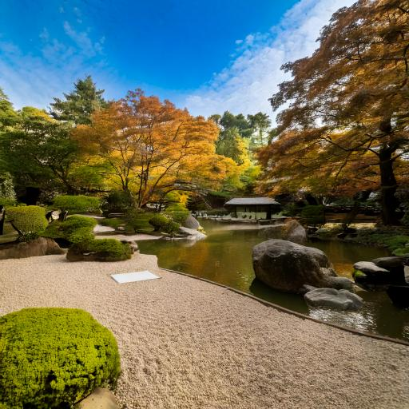

Loading...
Hjem
Tidsånden
Mode
Destinationer
Destinationer
Home
Destinationer
Steder at besøge
Zen destinationer
Koya-san (Koya-bjerget), Wakayama
600 Koyasan, Koya-cho, Ito-gun, Wakayama, Japan
Borobudur-templet, Java, Indonesien
Borobudur Temple, Jl. Badrawati, Kw. Candi Borobudur, Borobudur, Magelang Regency, Central Java, Indonesia
Byen Ubud i Bali
Ubud, Gianyar Regency, Bali, Indonesia

Ryoanji-templet, Kyoto
Ukyo Ward, Kyoto Ryoanji Goryonoshitacho, Japan